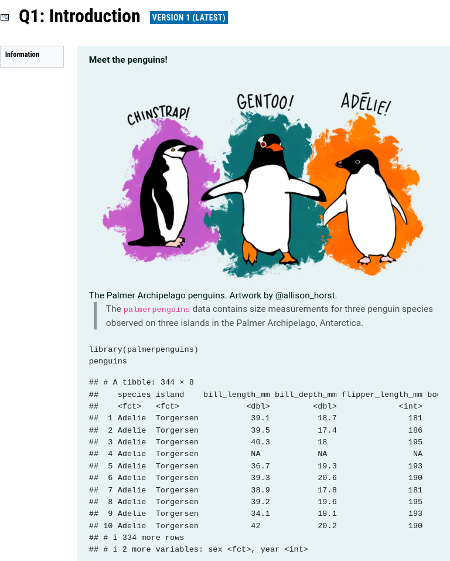
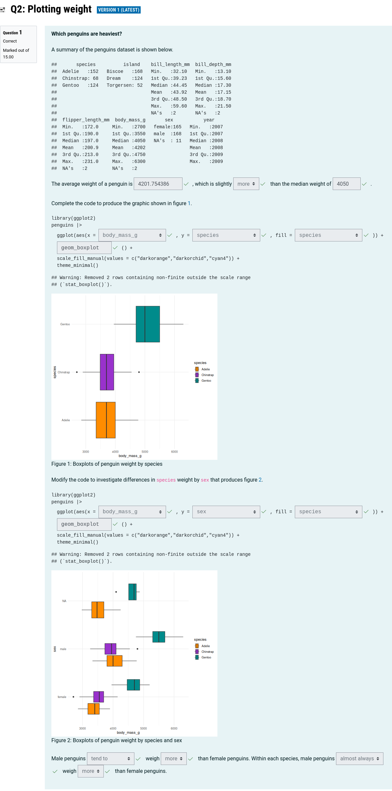
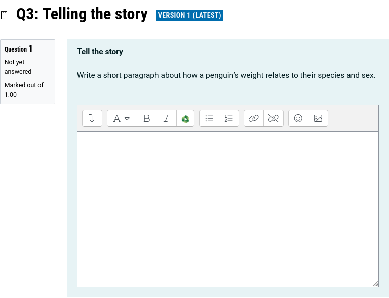
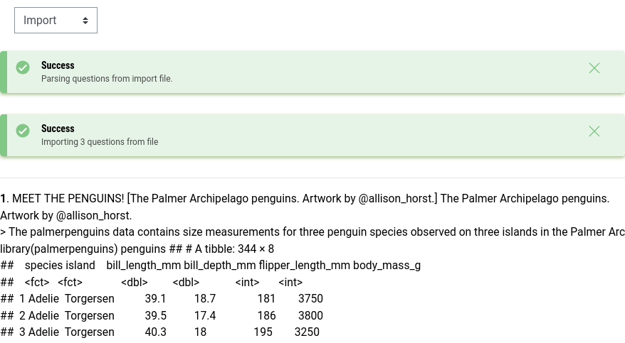

The moodlequiz R package which allows the creation of Moodle quiz questions using literate programming with R Markdown. This makes it easy to quickly create a quiz that can be randomly replicated with new datasets, questions, and options for answers.
Installation
You can install the development version of moodlequiz like so:
remotes::install_github("numbats/moodlequiz")Usage
A moodlequiz document produces a Moodle XML file suitable for importing quiz questions to Moodle into the question bank. Questions can be organized into categories to use Moodle’s random question functionality. An entire quiz consisting of multiple questions can be written in a single R Markdown document.
Front matter
The front matter allows you to describe the number of random replications, and the general category for all of these questions. For example:
---
title: Learning with penguins
output:
moodlequiz::moodlequiz:
replicates: 1
moodlequiz:
category: penguins
---In this case the questions will be imported into the ‘penguins’ category, with only 1 replicate for each question (the default).
It is possible to use randomization in R to produce many different replicates of the same question (as shown in the quiz randomization vignette).
Body
The R Markdown document’s body is used to create quiz questions with full markdown support. Any typical markdown output including figures, equations, tables and cross-references (excepting interactive outputs #31) will be imported as part of your Moodle quiz questions. As a literate programming user, writing quiz questions with full markdown support is a wonderful experience compared to the usual quiz creation workflow in Moodle.
Writing questions
Headers are used to separate quiz questions and organize them into subcategories.
-
# H1: Sub-categoryQuestions within this header will be organised together into this sub-category.
This is useful if your quiz contains several thematically similar questions, or if you want to randomize a specific question of group of questions.
-
## H2: Quiz questionsQuiz questions and their settings are specified within H2 headers.
For example:
This example quiz consists of a single sub-category (basics) which contains three quiz ‘questions’ of different types:
Description questions
A ‘description’ question in Moodle doesn’t contain any assessment activities. It is useful to describe the activity, such as give some background information on the dataset or learning objectives.
## Introduction
```{r setup, include = FALSE}
library(moodlequiz)
knitr::opts_chunk$set(echo = FALSE)
```
**Meet the penguins!**

> The `palmerpenguins` data contains size measurements for three penguin species observed on three islands in the Palmer Archipelago, Antarctica.
```{r data, echo = TRUE}
library(palmerpenguins)
penguins
```
In this example, a description question is used to provide background context about the Palmer Archipelago penguins (along with a lovely illustration and preview of the dataset). Both the image and table will be bundled into the XML and imported as part of the Moodle quiz question.
Cloze questions
The cloze style questions embed many questions within the question text (https://docs.moodle.org/405/en/Embedded_Answers_(Cloze)_question_type).
There are four types of cloze questions:
-
cloze_shortanswer(): Creates a short-answer question where the student provides a text response. -
cloze_singlechoice(): Generates a single-choice question where students select one correct answer from a list. -
cloze_multichoice(): Creates a multiple-choice question where students can select one or more correct answers. -
cloze_numerical(): Generates a numerical question where students input a numeric response with optional tolerance.
The single and multiple choice cloze questions support various options that change the appearance and shuffling behaviour.
There is also the cloze() function, which automatically chooses the appropriate question type based on the class of the input:
- Numerical:
cloze(42) - Short answer:
cloze("Australia") - Single choice:
cloze("rep_len", c("rep", "rep.int", "rep_len", "replicate")) - Multiple choice:
cloze(c("A", "B", "C"), LETTERS)
These functions should be used with inline R code, for example: `r cloze_singlechoice(choices(c("Adelie", "Chinstrap", "Gentoo"), "Chinstrap"))`
## Plotting weight
**Which penguins are heaviest?**
A summary of the penguins dataset is shown below.
```{r}
summary(penguins)
```
The average weight of a penguin is `r cloze(mean(penguins$body_mass_g, na.rm = TRUE), tolerance = 1)`, which is slightly `r cloze("more", c("more", "less"))` than the median weight of `r cloze(median(penguins$body_mass_g, na.rm = TRUE), tolerance = 1)`.
Complete the code to produce the graphic shown in figure \@ref(fig:boxplot).
```r
library(ggplot2)
penguins |>
ggplot(aes(x = `r cloze("body_mass_g", colnames(penguins))`, y = `r cloze("species", colnames(penguins))`, fill = `r cloze("species", colnames(penguins))`)) +
`r cloze("geom_boxplot")`() +
scale_fill_manual(values = c("darkorange","darkorchid","cyan4")) +
theme_minimal()
```
```{r boxplot, fig.cap="Boxplots of penguin weight by species"}
library(ggplot2)
penguins |>
ggplot(aes(x = body_mass_g, y = species, fill = species)) +
geom_boxplot() +
scale_fill_manual(values = c("darkorange","darkorchid","cyan4")) +
theme_minimal()
```
Modify the code to investigate differences in `species` weight by `sex` that produces figure \@ref(fig:boxplot-sex).
```r
library(ggplot2)
penguins |>
ggplot(aes(x = `r cloze("body_mass_g", colnames(penguins))`, y = `r cloze("sex", colnames(penguins))`, fill = `r cloze("species", colnames(penguins))`)) +
`r cloze("geom_boxplot")`() +
scale_fill_manual(values = c("darkorange","darkorchid","cyan4")) +
theme_minimal()
```
```{r boxplot-sex, fig.cap="Boxplots of penguin weight by species and sex"}
penguins |>
ggplot(aes(x = body_mass_g, y = sex, fill = species)) +
geom_boxplot() +
scale_fill_manual(values = c("darkorange","darkorchid","cyan4")) +
theme_minimal()
```
Male penguins `r cloze("tend to", c("almost always", "tend to"))` weigh `r cloze("more", c("more", "less"))` than female penguins. Within each species, male penguins `r cloze("almost always", c("almost always", "tend to"))` weigh `r cloze("more", c("more", "less"))` than female penguins.
Other questions
Other types of questions consist of a single answer field and some question text. You can specify any type of questions (even those defined in Moodle extension packages) with ## Question {type = <TYPE>}. Question types included in standard installations of Moodle include:
- multichoice
- truefalse
- shortanswer
- matching (not yet supported)
- essay
- numerical
## Telling the story {type=essay}
**Tell the story**
Write a short paragraph about how a penguin's weight relates to their species and sex.
In the penguins example, you can see that the question type has been set to essay.
These question types often have many question-specific options which are outlined in the Moodle XML format guide. Question specific options are specified in the question headers, for example enabling shuffleanswers for multiple choice questions with ## Multiple choice {type=multichoice shuffleanswers=1}.
Many of these question types require answers specified in <answer fraction="...">...</answer> sections. To specify the answers for a question with moodlequiz, use the answers div like so:
## Multiple choice {type=multichoice shuffleanswers=1}
Which of the following generates random numbers from a Normal distribution
::: {.answer fraction="100"}
```{r}
rnorm(10)
```
:::
::: {.answer fraction="0"}
```{r}
runif(10)
```
:::
::: {.answer fraction="0"}
```{r}
rnorm(10)^2
```
:::
Importing questions into Moodle
Create the XML quiz
Start by rendering the quiz to obtain the Moodle XML file for the quiz. You can try this with the Palmer penguins quiz described above, which is found here: https://raw.githubusercontent.com/numbats/moodlequiz/refs/heads/main/man/examples/penguins.Rmd
Once rendered, you should find a corresponding XML file in the same folder. It should look like this: https://raw.githubusercontent.com/numbats/moodlequiz/refs/heads/main/man/examples/penguins.xml
Import quiz questions
To import the quiz into Moodle, go to your Moodle course’s question bank. The navigation may vary among institutions, so if you struggle to find it the URL pattern is: https://<DOMAIN>/question/edit.php?courseid=<COURSE ID> (where <COURSE_ID> is the number found in most URLs of your course).

Import questions by selecting “Import” from the drop-down.

From the import form:
- Select “Moodle XML format” as the file format
- Select “Get category from file” under the “General” section
- Import the XML file into the file box
- Click import

You should now see the questions successfully imported into Moodle, along with a preview of the questions. Please report any importation issues.

Creating a quiz
Create a quiz as you normally would in Moodle (instructions here: https://docs.moodle.org/en/Building_Quiz)
When adding a question, select “from question bank” (or “a random question” for random questions within categories).

In the question import dialogue:
- Select the question category which was specified in the front matter (penguins)
- Sort questions alphabetically by name by clicking on the “Question” header in the table
- Select the questions to import via the checkboxes in the table (or select all with the checkbox in the table header)
- Click “Add selected questions to the quiz”

Your questions are now added to the quiz! 🎉

You can now repaginate and further adjust the quiz settings as necessary.